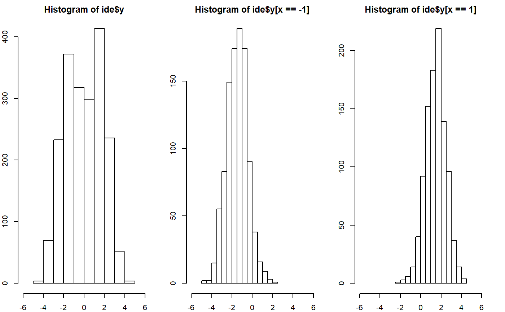
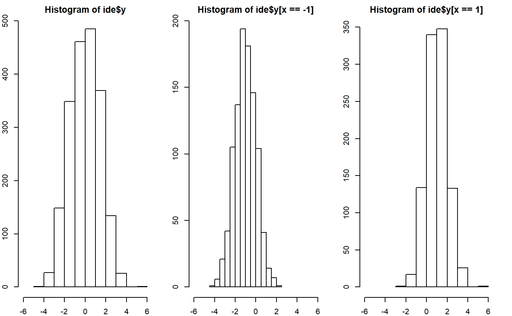
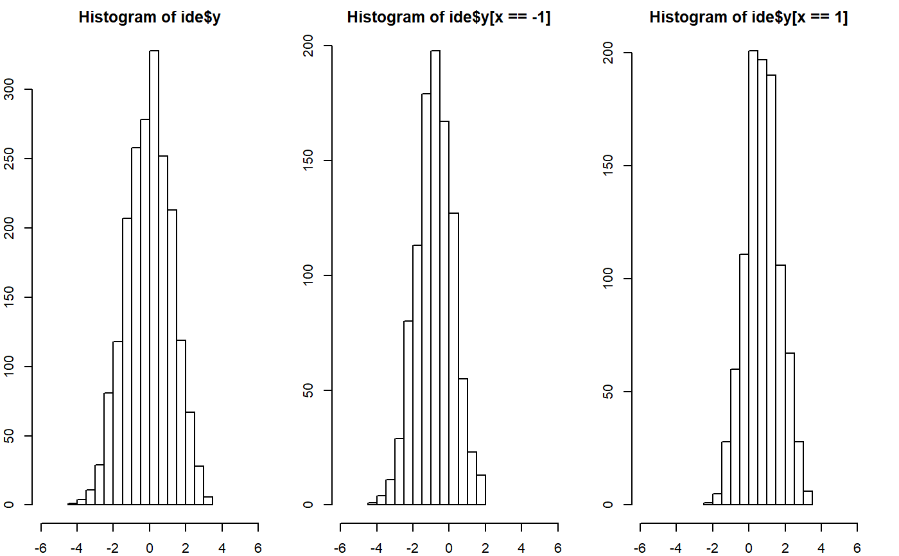

setideology.RdInitialize ideology of agents with the linear model.
setideology(group, commonfactor = 0, groupfactor = 1, personalfactor = 1, groupfactor_type = "constant", b_seed = NULL, e_seed = NULL)
| group | The numeric vector of the group memberships of the agents. |
|---|---|
| commonfactor | The common factor in ideology (intercept). |
| groupfactor | The group influence on ideology. |
| personalfactor | The random personal factor in ideology (The SD of the random error to the model). |
| groupfactor_type | If |
| b_seed | The random number seed to draw group influence used when |
| e_seed | The random number seed to draw personal influence. |
The list of following elements:
y The agents' ideologies/
x The group values rescaled in -1 to 1 range.
a The common influence = commmonfactor
b The vector of the group influcence
e The vector of the personal influence
tracker The tracker table of ideology.
The ideology for agent $i$ $(y_i)$ is calculated by the linear function: $y = a + b_i * x_i + e_i$.
set.seed(30) x <- sample(rep(c(-1,1),each=1000)) table(x)#> x #> -1 1 #> 1000 1000# Ideology Highly Sorted by Group ide <- setideology(x, 0, 1.5, 1) par(mfrow=c(1,3),mar=c(2,2,2,2)) hist(ide$y, xlim=c(-6,6)); mean(ide$y); sd(ide$y)#> [1] 0.009549602#> [1] 1.781407hist(ide$y[x==-1],xlim=c(-6,6)); sd(ide$y[x==-1])#> [1] 1.015492hist(ide$y[x==1],xlim=c(-6,6)); sd(ide$y[x==1])#> [1] 0.9809909# Ideology Moderately Sorted by Group ide <- setideology(x, 0, 1, 1) par(mfrow=c(1,3),mar=c(2,2,2,2)) hist(ide$y, xlim=c(-6,6)); mean(ide$y); sd(ide$y)#> [1] 0.0191366#> [1] 1.434517hist(ide$y[x==-1],xlim=c(-6,6)); sd(ide$y[x==-1])#> [1] 1.019641hist(ide$y[x==1],xlim=c(-6,6)); sd(ide$y[x==1])#> [1] 0.9975162# Ideology Weakly Sorted by Group ide <- setideology(x, 0, 0.8, 1) par(mfrow=c(1,3),mar=c(2,2,2,2)) hist(ide$y, xlim=c(-6,6)); mean(ide$y); sd(ide$y)#> [1] -0.02278747#> [1] 1.254281hist(ide$y[x==-1],xlim=c(-6,6)); sd(ide$y[x==-1])#> [1] 1.010598hist(ide$y[x==1],xlim=c(-6,6)); sd(ide$y[x==1])#> [1] 0.955185